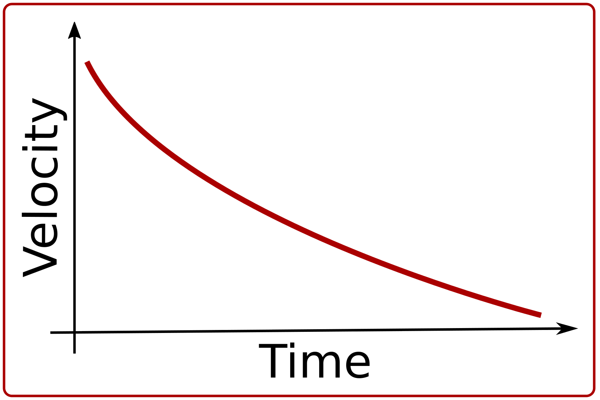
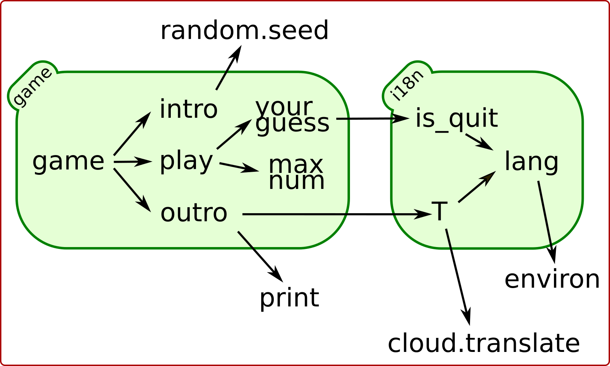
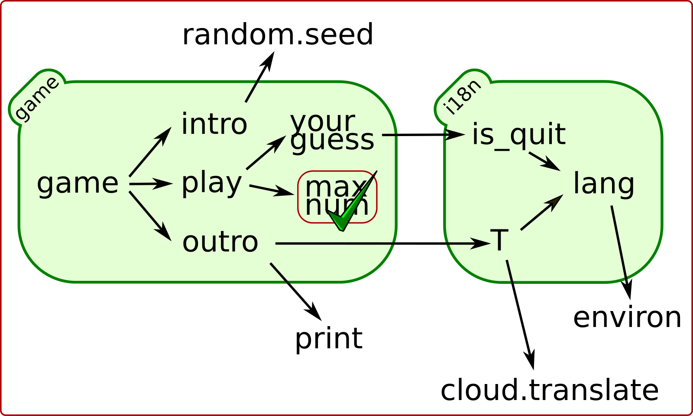

Unit-testing in the real world with mock
Chen Rotem Levy
2017-06-13 Tue 14:30
Time me — (0:20)
Figure 1: Time: 30:35
Testing is important — (0:20)
Figure 2: important
#+BEGIN_NOTES Everybody agree that automatic tests are important, but why.
It turns out that if you don’t have tests bad things happen. #+END_NOTESRR
Productivity suffers — (0:10)

Figure 3: Productivity suffers
You will be unhappy — (0:35)
Figure 4: No tests
Let’s learn unit-testing — (0:10)
Figure 5: pick up a book
Example — (0:45)
def test_to_roman_numerals(): assert to_roman_numerals(1949) == 'MCMXLIX' assert to_roman_numerals(2017) == 'MMXVII'
I will save the day — (0:15)

Figure 6: I will save the day
The real world is complicated — (1:30)

Figure 7: If it only was that easy…
Example: Guessing Game — (1:15)
num = think_of_a_number() while True: print("Can you guess my number?") guess = your_guess() if guess < num: print("No, too small.") elif guess > num: print("No, too big.") else: print("Yes, you win!") break
Enterprise Edition — (0:10)
Figure 8: The Enterprise Edition
GGEE — (1:20)

Figure 9: (some of) GGEE’s design
Low hanging — (0:20)
Figure 10: Found one!
test max_number — (0:50)
def max_number(level): # type: (int) -> int return (1 << level) - 1
def test_max_number(): assert game.max_number(1) == 1 assert game.max_number(2) == 3 assert game.max_number(3) == 7
Woo-Hoo! — (0:20)

Figure 11: We have a DOT!
i18n.lang calls… — (0:10)
Figure 12: lang uses environ
i18n.lang — (1:50)
from os import environ def lang(): # type: () -> str lang_keys = ('LC_MESSAGES', 'LANG', 'LC_ALL') lang_env = (environ.get(key) for key in lang_keys) return next(filter(None, chain(lang_env, 'C')))[:2]
Enter Mocking — (1:05)

patch environ — (0:15)
Figure 14: Pathing environ
test_i18n.test_lang — (3:05)
try: from unittest import mock except ImportError: import mock # Python < 3.3
from guessing import i18n @mock.patch.dict('guessing.i18n.environ', LC_MESSAGES='he_IL') def test_lang_lc_message_he(): assert i18n.lang() == 'he'
Check! Next… — (0:05)
Figure 15: 2 down
is_quit calls… — (0:45)
Figure 16: The call graph of is_quit()
is_quit — (0:35)
def is_quit(text): # type: (str) -> bool if lang() == 'he': return text.strip() in [ 'לא', 'די', 'מספיק', 'צא בחוץ'] else: return text.strip().lower() in [ 'quit', 'stop', 'exit', 'no', 'enough']
patch environ — (0:10)
Figure 17: The call graph of is_quit() with mocked environ
patch lang — (0:35)
Figure 18: The call graph of is_quit() with mocked lang()
Meet Mock — (0:10)
Figure 19: I am OK with that
Lets call this Mock Lulu — (1:00)
>>> lulu = mock.Mock(name='Lulu')
>>> lulu <Mock name='Lulu' id='140518155448504'>
>>> lulu() <Mock name='Lulu()' id='…55482336'>
>>> lulu.bark <Mock name='Lulu.bark' id='…55483064'>
>>> lulu.bark().run.after(42, what='cats') <Mock name='Lulu.bark().run.after()' id=1'…45716856'>
We can tell Lulu what to do — (2:00)
>>> lulu.bark.return_value = 'Woof!' >>> lulu.bark() 'Woof!'
>>> lulu.make_puppy.return_value.bark.side_effect = [ 'yip', 'YEEP!', Exception('stinky!')]
>>> puppy = Lulu.make_puppy(with_='Fido') >>> puppy.bark() 'yip'
>>> puppy.bark('again') 'YEEP!'
>>> puppy.bark()
… Exception: stinky!
test_is_quit — (0:40)
@mock.patch('guessing.i18n.lang') def test_is_quit_english(mock_lang): mock_lang.return_value = 'en' assert i18n.is_quit(' QUIT ') assert not i18n.is_quit('I want my Mummy!')
… — (0:05)
Figure 20: OK, what next…
API Calls — (0:50)
Figure 21: calls exteranl API
T — (1:00)
from google.cloud import translate CLIENT = translate.Client() def T(text): # type: (str) -> str lng = lang() if lng in ('C', 'en'): return text tr = CLIENT.translate(text, format_='text', source_language='en', target_language=lng) return tr[0]['translatedText']
Patch the cloud — (0:20)
Figure 22: Patch the cloud
remember that — (0:30)
CLINET = … def T(text): # … tr = CLIENT.translate(…) return tr[0]['translatedText']
full test_T — (0:45)
@mock.patch('guessing.i18n.CLIENT') @mock.patch('guessing.i18n.lang') def test_T_hebrew(mock_lang, mock_CLIENT): mock_lang.return_value = 'he' mock_CLIENT.translate.return_value = [ {'translatedText': 'שלום'}] assert i18n.T('hello') == 'שלום'
module done — (0:04)
Figure 23: i18n – Check!
print — (0:10)
Figure 24: it prints
Some hand waving — (0:10)
Figure 25: Blah blah blah
OK… — (0:05)
Figure 26: Let’s say we did it
Did it happen? — (0:15)
Figure 27: calls random.seed()
game.intro — (0:25)
def intro(): # type: () -> None print(T("I am bored, let's play a game.")) random.seed()
Lulu is a snitch — (0:10)
Figure 28: Remember me?
Tell — (0:55)
>>> lulu.play('ball') >>> lulu.play('the', 'Lute') >>> lulu.play.call_count 2
>>> lulu.run_around(how='in circles') >>> lulu.run_around.assert_called_once_with( how='in circles')
>>> lulu.bark_in_the_night.assert_not_called()
test_intro — (1:00)
@mock.patch('random.seed') @mock.patch('guessing.game.print') @mock.patch('guessing.game.T', side_effect=lambda x: x) def test_intro(mock_T, mock_print, mock_seed): game.intro() msg = "I am bored, let's play a game." mock_T.assert_called_once_with(msg) mock_print.assert_called_once_with(msg) mock_seed.assert_called_once_with()
We are almost done… — (0:05)
Figure 29: Yeh!
Some hand waving — (0:10)

Figure 30: Something, something, something, done!
Done — (0:05)

Figure 31: All done!
Caution — (0:15)
Figure 32: wet floor
Wrong — (0:15)
Figure 33: Err…
Bad mock — (1:00)
Figure 34: Face palm
Go only when the light is green — (0:15)
Figure 35: Light must be green
But also use your common sense — (0:15)
Figure 36: But green doesn't say drive
A Step on a long journey — (0:50)
Figure 37: Still long to go
Questions? — (5:00)
(if there is time)
Documentation
Figure 38: About 1/2 of the unittest.mock std doc
Credits
links
- Mocking Strategies (slides) / Excella's Dan Davis at the Django District Meetup group on Feb 10, 2015
- Stop Moking, Start Testing / Augie Fackler, Nathaniel Manista Project Hosting at Google Code is a large, well-established system written mostly in Python. We'll share our battle-born convictions about creating tests for test-unfriendly code and the larger topic of testing.
images
- important: https://pixabay.com/en/road-sign-attention-right-of-way-663368/
- sad dog: https://pixabay.com/en/animal-dog-unhappy-sad-art-2274100/
- mocking: https://unsplash.com/photos/wOHH-NUTvVc
- atomic bomb: https://pixabay.com/en/atomic-bomb-mushroom-cloud-explosion-1011738/
- enterprise: https://www.flickr.com/photos/thart2009/22658375526
- superman: https://unsplash.com/@zoncoll?photo=ZtLASJerPb0
- knot: https://unsplash.com/photos/-yz22gsqAH0 (cc-0)
- happy dog with hat: https://unsplash.com/photos/BXs8SjVelKs
- hand waving: https://unsplash.com/photos/SZYreZsJ-fE
- hand waving 2: https://unsplash.com/photos/hzgs56Ze49s
- hand waving 3: https://unsplash.com/photos/cAtzHUz7Z8g
- hand waving 4: https://unsplash.com/photos/TA6t4NbHCv4
- coverage: https://unsplash.com/?photo=2Ts5HnA67k8
- danger: https://unsplash.com/search/danger?photo=28v9cq7ytNU
- green light: https://pixabay.com/en/traffic-lights-green-light-1013506/
- green light drinks: https://unsplash.com/photos/LbUzPqxPUAs
- exception: https://unsplash.com/collections/440851/work?photo=EXuKQaf3Ei8
- brick wall: https://unsplash.com/?photo=daYpIvggFxA
- legacy code: https://unsplash.com/?photo=FX__egbD0zE
- flimsy: https://unsplash.com/?photo=5DJqsjAYlmk
- duck typing: https://unsplash.com/?photo=5x7PmmHanG4
- mocking the cloud: https://unsplash.com/photos/0DosbK_etK8
- stop watch: https://unsplash.com/photos/p3Pj7jOYvnM